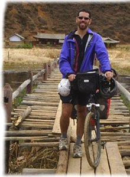

B2P（Beijing to Paris）活動的發起人之一是紐西蘭的Olly，架設了一個www.beijingtoparis.com的網站。

距今一百年前的1907年，有人提出了一個活動的建議－
「以汽車的方式完成從北京到巴黎的旅行」
在那個年代，這一趟旅行很多地方連道路都還沒有修築好，更別提加油站之類的補給，
所以雖然說是以汽車來進行旅行，但很多時候都是用人力的方式來拉車。
當年6月10日，五輛汽車從北京出發，藉由這個活動來宣告汽車時代的來臨。
一百年後的今天，在面臨空前氣候巨變的二十一世紀，有人提出了新的想法，
同樣的路線，但是不使用動力交通工具，而要靠自己的腳騎著單車完成北京到巴黎的旅行，
不製造空氣污染，不排放製造溫室效應的廢氣，降低能源消耗，
以最環保的純人力－單車來前進，藉以喚醒世人對減緩地球溫室效應的重視。
裡面提供了許多有用的資訊，包過路線建議以及許多的文件（申辦簽證、行前須知...等）
其中一份B2P Entry Pack文件我覺得蠻有參考價值，對我的幫助也很大。
Olly撰寫了英文的版本，『B2P Entry Pack』，我花了點時間翻譯成中文的版本『B2P參加資料』。
目前在Olly的網站可以下載，我幫忙分流下載。
B2P是一個公開的活動，所有參加者資料，在這個Olly的騎士介紹網頁中。
沒有報名費、也沒有參加費更沒有贊助費用，也沒有所謂的官方組織，想參加的人必須自己搞定一切！
來吧！懷有熱血的青年，歡迎一起加入這個傻呼呼的活動～